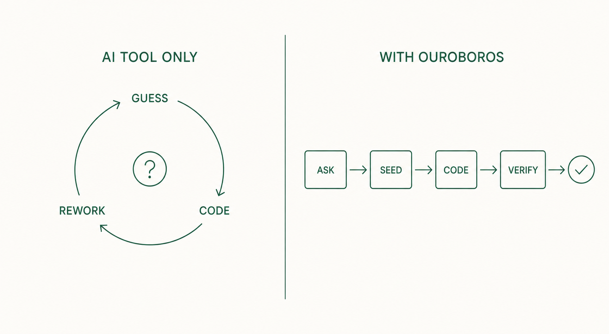

02
2. Why use it
AI coding tools are fast, but pinning down requirements and verifying completion are left to you. Ouroboros turns those two jobs into a procedure.
2.1 Problems when using an AI coding tool alone
A request like "build a to-do app" says nothing about storage, number of users, or how completion is handled. When the AI picks those values on its own, you fix the code after it is written.
| Problem | Consequence |
|---|---|
| The AI fills in missing decisions by itself | Rework after the code is done |
| Only a "done" message remains | No way to check whether it is actually done |
| Long chats blur the original requirements | A result different from what was agreed |
| A dropped session loses its context | You cannot find where it stopped and explain everything again |
| Repeated failures leave no record | Fixes do not accumulate |
2.2 What changes with Ouroboros

| Change | How |
|---|---|
| Decisions are fixed before coding | The Interview asks about missing decisions (ch. 5) |
| Completion criteria are written down | Acceptance Criteria are saved in the Seed (ch. 6) |
| Completion is verified | A 3-stage evaluation checks tests and criteria (ch. 8) |
| Interrupted work can resume | Execution events are stored in a local database (ch. 11) |
| Failures feed the next run | Evaluation results update the Seed for re-execution (ch. 9) |
2.3 Tasks that fit
- Feature work with several requirements that need sorting out
- Work whose completion must be proven by tests
- Work that will clearly go through several revisions
- Long work that must survive interruptions
2.4 Tasks that do not need it
For a typo fix or a one-line change that needs no explanation, an AI coding tool alone is faster. The question-and-evaluation procedure would be bigger than the work itself.